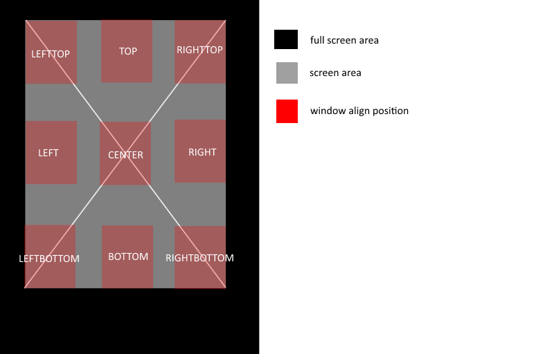

ウィンドウの配置について¶
スクリーン:¶
SCREEN を設定することによって、画面内に仮想的なスクリーンを定義することができます。
ウィンドウ座標やサイズはこのスクリーンを基準に決定されます。
これによって、アンカーの中心位置や基準位置を調整することができます。
スクリーンは、特に明示的に設定しない限り、画面サイズと同じになり、以下と同等の記述になります。
SCREEN = 0,0,{100},{100}; //this mean is full screen.
割合指定 を使うことによって、画面サイズの割合を用いて指定できます。
STYLE = ANCHOR_CENTER; SCREEN = 0,100,0{100},-50{100}; SIZE = 400,400;
この場合、下図のようにウィンドウが配置されます。

アンカー：¶
ウィンドウを配置する際、スクリーン上の原点座標をそれぞれ設定可能です。
その原点座標から、相対位置で座標を指定できます。
これによって、スクリーンサイズが変わってもウィンドウの配置が崩れずらくなります。
ウィンドウシステムでは、この原点位置の指定をアンカーと呼んでいます。
アンカーは、下図の通り9か所から自由に設定可能です。